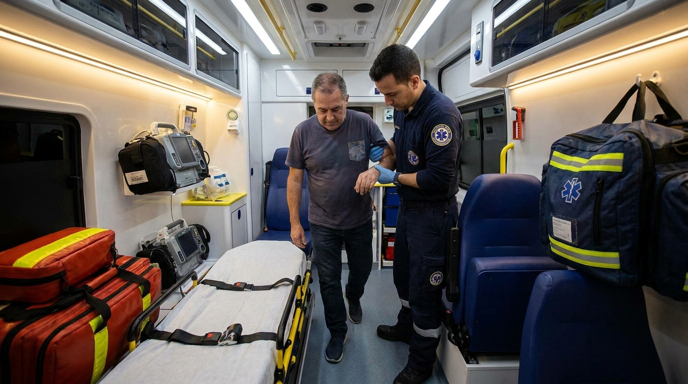
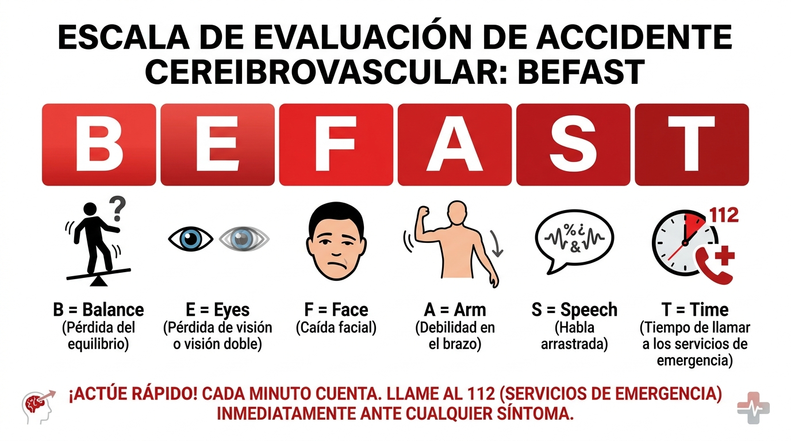

Si ya conoces F.A.S.T., estás un paso adelante. Pero en la práctica clínica, sobre todo en el ámbito prehospitalario y de urgencias, hay dos signos que pueden aparecer antes que los clásicos y que la regla original no contempla: pérdida de equilibrio y alteraciones visuales. Ahí entra BEFAST.
BEFAST es un acrónimo desarrollado para mejorar la sensibilidad de detección de un Evento Vascular Cerebral (EVC). Añade dos componentes a la regla FAST:
La evidencia sugiere que BEFAST puede identificar hasta un 10-15% adicional de casos de EVC que F.A.S.T. sola podría pasar por alto, especialmente infartos en territorio posterior (circulación vertebrobasilar).

Los infartos en la circulación posterior — los que afectan el tronco encefálico y el cerebelo — representan aproximadamente el 20% de todos los EVC isquémicos. Sus manifestaciones clínicas son diferentes a las de los infartos en la circulación anterior:
Estos síntomas son precisamente los que F.A.S.T. no cubre. Un paciente que llega a urgencias con mareo y visión doble, sin debilidad facial ni afasia, puede ser subestimado si el clínico se limita a F.A.S.T. BEFAST obliga a considerar el EVC posterior como posibilidad.
Para el profesional de urgencias prehospitalarias, BEFAST tiene un valor particular: permite activar el protocolo de Código Ictus desde la escena, reduciendo el tiempo intrahospitalario.
El flujo ideal es:
Estudios demuestran que la notificación prehospitalaria，提前（anticipada）al equipo de ictus reduce el tiempo de punción arterial en hasta un 30%.
Un EVC puede ocurrirle a cualquiera. En México:
Cada minuto de retraso en el tratamiento de un EVC isquémico significa la pérdida de aproximadamente 1.9 millones de neuronas. La detección temprana no es un ejercicio académico: es lo que determina si un paciente caminaOUT de alta o queda con discapacidad permanente.
Ninguna escala de detección es perfecta. Hay situaciones donde un EVC puede presentarse sin signos BEFAST positivos claros:
Cuando la clínica no cuadra pero la sospecha persiste, la regla es clara: si el índice de sospecha es moderado-alto, solicite neuroimagen urgente. Mejor sobreactuar que dejar pasar un EVC en sus primeras horas.
Dominar BEFAST no es suficiente si no se traduce en acción. La formación continua en reconocimiento y respuesta al EVC es lo que cierra la brecha entre detectar y tratar a tiempo.
El curso ASLS (Advanced Stroke Life Support) de la American Heart Association proporciona las herramientas para que profesionales de la salud evalúen, estabilicen y faciliten la transferencia de pacientes con EVC sospecha. Está diseñado para equipos de urgencias, paramédicos, enfermeras y médicos que requieren una preparación práctica y basada en evidencia para el manejo del ictus.
¿Quieres actualizar tus competencias en manejo de EVC?
En Asesores en Emergencias ofrecemos el curso ASLS (Advanced Stroke Life Support) de la American Heart Association, diseñado para profesionales de la salud que requieren formación práctica y basada en evidencia en el manejo del ictus agudo.
Contáctanos en www2.emergencias.com.mx o escríbenos a jperez@emergencias.com.mx para conocer próximas fechas, precios y requisitos.